<!DOCTYPE html>
<html lang="en">

<head>
    <meta charset="UTF-8">
    <meta name="viewport" content="width=device-width, initial-scale=1.0">
    <link rel="stylesheet" href="assets/css/icons.css">
    <!--  animate css plugins -->
    <link rel="stylesheet" href="assets/css/animate.css">
    <!--  magnific-popup css plugins -->
    <link rel="stylesheet" href="assets/css/magnific-popup.css">
    <!--  owl carosuel css plugins -->
    <link rel="stylesheet" href="assets/css/owl.carousel.min.css">
    <!-- metis menu css file -->
    <link rel="stylesheet" href="assets/css/metismenu.css">
    <!--  owl theme css plugins -->
    <link rel="stylesheet" href="assets/css/owl.theme.css">
    <!--  Bootstrap css plugins -->
    <link rel="stylesheet" href="assets/css/bootstrap.min.css">
    <!--  aos css plugins -->
    <link rel="stylesheet" href="assets/css/aos.min.css">
    <!--  main style css file -->
    <link rel="stylesheet" href="assets/css/style.css">
</head>

<body>
    <footer class="footer-2 footer-wrap">
        <div class="footer-widgets">
            <div class="container">
                <div class="row justify-content-between">
                    <div class="col-md-6 col-xl-3 col-12 pr-xl-4">
                        <div class="single-footer-wid site_footer_widget">

                            <div class="footer-logo">
                                <a href="index.html">
                                    
                                </a>
                            </div>

                            <div class="footer-logo-2">
                                <a href="index.html">
                                    
                                </a>
                            </div>
                            <p class="mt-4">Berdiri pada tanggal 4 Juni 1993. Sebelumnya merupakan Divisi
                                Pengolahan Data (Electronic  Data Processing / EDP) PT Krakatau Steel (PT
                                KS). Kami lahir dengan nama PT Krakatau Information Technology atau biasa
                                disebut ‘Krakatau IT’</p>
                            <div class="social-link mt-30">
                                <a href="#"><i class="fab fa-facebook-f"></i></a>
                                <a href="#"><i class="fab fa-instagram"></i></a>
                                <a href="#"><i class="fab fa-linkedin"></i></a>
                                <a href="#"><i class="fab fa-youtube"></i></a>
                            </div>
                        </div>
                    </div> <!-- /.col-lg-3 - single-footer-wid -->
                    <div class="col-md-6 col-xl-2 col-12">
                        <div class="single-footer-wid">
                            <div class="wid-title">
                                <h4>Company</h4>
                            </div>
                            <ul>
                                <li><a href="index-2.html">Home</a></li>
                                <li><a href="about.html">About Us</a></li>
                                <li><a href="services-detail.html">Services & Products</a></li>
                                <li><a href="cases-grid.html">Solutions</a></li>
                                <li><a href="news.html">News</a></li>
                                <li><a href="contact.html">Contact</a></li>
                            </ul>
                        </div>
                    </div> <!-- /.col-lg-3 - single-footer-wid -->
                    <div class="col-md-6 col-xl-3 col-12">
                        <div class="single-footer-wid recent_post_widget">
                            <div class="wid-title">
                                <h4>News</h4>
                            </div>
                            <div class="recent-post-list">
                                <div class="single-recent-post">
                                    <div class="thumb bg-cover"
                                        style="background-image: url('assets/img/blog/b1.jpg');"></div>
                                    <div class="post-data">
                                        <span><i class="fal fa-calendar-alt"></i>25th Jul 2024</span>
                                        <h5><a href="news-details.html">Optimalisasi IoT Di Kawasan
                                                Industri</a></h5>
                                    </div>
                                </div>
                                <div class="single-recent-post">
                                    <div class="thumb bg-cover"
                                        style="background-image: url('assets/img/blog/b2.jpg');"></div>
                                    <div class="post-data">
                                        <span><i class="fal fa-calendar-alt"></i>26th Jul 2024</span>
                                        <h5><a href="news-details.html">Data Analitik Menjadi Fokus Di
                                                Indonesia</a></h5>
                                    </div>
                                </div>
                            </div>
                        </div>
                    </div> <!-- /.col-lg-3 - single-footer-wid -->
                </div>
            </div>
        </div>

        <div class="footer-bottom">
            <div class="container text-center">
                <div class="footer-bottom-content">
                    © 2024 <a href="index.html">PT Krakatau Information Technology</a>. All Rights Reserved
                </div>
            </div>
        </div>
    </footer>
</body>

</html>